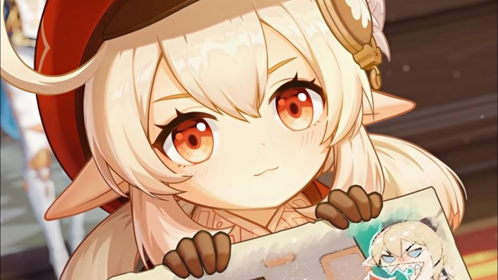
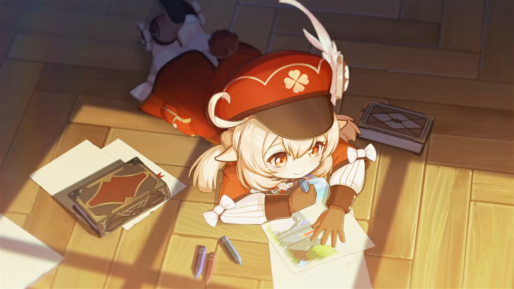

Кли - маленькая девочка, хорошо владеющая пиротехникой. Пусть раньше её не замечали, однако на жителей Мондштада и его окрестностей она произвела большое впечатление. Рэйзор считает что она крайне бездумна, и также говорит «Девочка в красном уже бы давно спалила лес, охотясь на кабана», Джинн также видит в ней просто бездумного ребёнка, который не умеет пользоваться своим талантом в создании бомб.
Она настолько мала, что расстроилась, когда случайно взорвала мага Бездны бомбой, которую он хотел украсть. Джинн вместе с Кэйей написали ей правила, которые были ей предельно понятны. Однако именно из-за них она испугалась, убив мага Бездны. И пусть она достаточно сильная, она все ещё ребёнок, который всё также бездумно будет делать различные вещи.
Рыцарь Искорка из Ордо Фавониус! Повсюду за ней следуют вспышки и взрывы!
Но весь огонь затухает, как только появляется Джинн.
Одиночное заключение даёт время подумать над новыми формулами пороха...
Но всё равно свобода – лучше!


Внешность
Кли — маленькая девочка со светлой кожей, пепельными волосами и золотисто-оранжевыми глазами. Её отличительной чертой являются удлинённые эльфийские уши. Кли одета в короткое белое платье с кружевным подолом, поверх которого носит красный плащ с укороченными рукавами, бордовой отделкой на плечах, изображением четырёхлистного клевера спереди и кармашками на боках. Под платье надеты белые панталоны. Наряд дополняют тёмные перчатки, оранжевый шарф с помпоном, коричневые гольфы с тёмно-коричневой и белой отделкой по верхнему краю, ботинки и коричневый ранец. Ранец украшен фигуркой животного из помпонов. Также Кли носит красный картуз, украшенный четырёхлистным клевером и парой перьев
атаки
Обычная атака:
Кли любит взрывать всё вокруг! Она бросает до трёх бомб, наносящих Пиро урон по площади.
Заряженная атака:
Короткое заклинание, наносящее Пиро урон по площади, на которое тратится определённое количество выносливости.
Атака в падении
Накопив энергию огня, стремительно падает на землю, атакуя всех врагов на пути. Приземлившись, наносит Пиро урон по площади.
Таланты
Прыг-скок бомба Прыг-скок бомба Элементальный навык
Кидает мощную Прыг-скок бомбу, которая три раза отскакивает от поверхностей и взрывается, нанося Пиро урон по площади при каждом отскоке.
После третьего отскока бомба взрывается и распадается на мины.
Мины взрываются через некоторое время, либо при касании врагов. Взрыв наносит Пиро урон по площади.
Талант Грохот и искры.
Грохот и искры Взрыв стихии
Кли жжёт по-полной! На время действия навыка Кли призывает Грохот и искры, которые наносят окружающим врагам Пиро урон по площади.
Талант Тук-тук, кто там?. Тук-тук, кто там? Пассивный талант 1
При нанесении урона навыком Прыг-скок бомба или обычной атакой, Кли имеет 50% шанс получить взрывную искру.
Взрывная искра тратится при следующей заряженной атаке, которая наносит на 50% больше урона и не потребляет выносливость.
Талант Искры без границ Искры без границ Пассивный талант 2
При критическом попадании заряженной атакой Кли все члены отряда получают 2 ед. элементальной энергии.
Талант Всюду сокровища!. Всюду сокровища! Пассивный талант 3
Отмечает диковины Мондштадта на мини-карте.
Материалы повышения уровня талантов
Материалы повышения талантов Rarity 2 background.pngПредмет Учения о «Свободе».
Учения о «Свободе»
Предмет Указания о «Свободе»
Указания о «Свободе»
Философия о «Свободе»
Философия о «Свободе»
Обычные материалы возвышени,Свиток божественной магии.
Свиток божественной магии
Свиток печати.
Свиток печати
Свиток запретного проклятья.
Свиток запретного проклятья
Материалы еженедельных боссов,Кольцо Борея.
Кольцо Борея
Созвездие
Уровень Иконка Название Описание
1 Созвездие Цепные реакции.
Цепные реакции Исполнение атак и навыков имеет шанс закидать врагов искрами, нанося урон, равный 120% от урона навыка Грохот и искры.
2 Созвездие Осколочные мины.
Осколочные мины Мины навыка Прыг-скок бомба уменьшают защиту коснувшихся их врагов на 23% в течении 10 сек.
3 Созвездие Фирменный ингредиент.
Фирменный ингредиент Увеличивает уровень навыка Прыг-скок бомба на 3.
Макс. уровень: 15
4 Созвездие Взрывоопасно.png Взрывоопасно Если Кли покидает поле боя во время навыка Грохот и искры, активируется взрыв, который наносит 555% её силы атаки в качестве Пиро урона по площади.
5 Созвездие Сверхновая звезда.png Сверхновая звезда Увеличивает уровень навыка Грохот и искры на 3.
Макс. уровень: 15
Пламенный восторг Когда навык Грохот и искры активен, Кли каждые 3 сек. восстанавливает 3 ед. элементальной энергии другим членам отряда;
Активация навыка Грохот и искры даёт всем членам отряда 10% бонус Пиро урона на 25 сек.